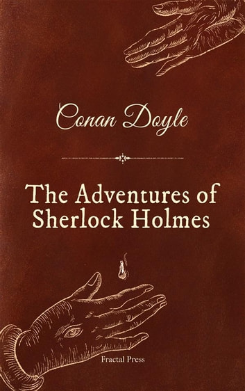

This ebook is for the use of anyone anywhere in the United States and most other parts of the world at no cost and with almost no restrictions whatsoever. You may copy it, give it away or re-use it under the terms of the Project Gutenberg License included with this ebook or online at www.gutenberg.org. If you are not located in the United States, you’ll have to check the laws of the country where you are located before using this eBook.
| 1. | Title | The Adventures of Sherlock Holmes |
| 2. | Author | Arthur Conan Doyle |
| 3. | Release Date | March 1, 1999 |
| 4. | Language | English |
|  | The Adventures of Sherlock HolmesBYArthur Conan Doyle |
To Sherlock Holmes she is always the woman. I have seldom heard him mention her under any other name. In his eyes she eclipses and predominates the whole of her sex. It was not that he felt any emotion akin to love for Irene Adler. All emotions, and that one particularly, were abhorrent to his cold, precise but admirably balanced mind. He was, I take it, the most perfect reasoning and observing machine that the world has seen, but as a lover he would have placed himself in a false position. He never spoke of the softer passions, save with a gibe and a sneer. They were admirable things for the observer—excellent for drawing the veil from men’s motives and actions. But for the trained reasoner to admit such intrusions into his own delicate and finely adjusted temperament was to introduce a distracting factor which might throw a doubt upon all his mental results. Grit in a sensitive instrument, or a crack in one of his own high-power lenses, would not be more disturbing than a strong emotion in a nature such as his. And yet there was but one woman to him, and that woman was the late Irene Adler, of dubious and questionable memory.
I had seen little of Holmes lately. My marriage had drifted us away from each other. My own complete happiness, and the home-centred interests which rise up around the man who first finds himself master of his own establishment, were sufficient to absorb all my attention, while Holmes, who loathed every form of society with his whole Bohemian soul, remained in our lodgings in Baker Street, buried among his old books, and alternating from week to week between cocaine and ambition, the drowsiness of the drug, and the fierce energy of his own keen nature. He was still, as ever, deeply attracted by the study of crime, and occupied his immense faculties and extraordinary powers of observation in following out those clues, and clearing up those mysteries which had been abandoned as hopeless by the official police. From time to time I heard some vague account of his doings: of his summons to Odessa in the case of the Trepoff murder, of his clearing up of the singular tragedy of the Atkinson brothers at Trincomalee, and finally of the mission which he had accomplished so delicately and successfully for the reigning family of Holland. Beyond these signs of his activity, however, which I merely shared with all the readers of the daily press, I knew little of my former friend and companion.
I had called upon my friend, Mr. Sherlock Holmes, one day in the autumn of last year and found him in deep conversation with a very stout, florid-faced, elderly gentleman with fiery red hair. With an apology for my intrusion, I was about to withdraw when Holmes pulled me abruptly into the room and closed the door behind me.
“You could not possibly have come at a better time, my dear Watson,” he said cordially.
“I was afraid that you were engaged.”
“So I am. Very much so.”
“Then I can wait in the next room.”
“Not at all. This gentleman, Mr. Wilson, has been my partner and helper in many of my most successful cases, and I have no doubt that he will be of the utmost use to me in yours also.”
The stout gentleman half rose from his chair and gave a bob of greeting, with a quick little questioning glance from his small fat-encircled eyes.
| Source | Their Ratings |
|---|---|
| Times | ⭐⭐⭐⭐ |
| Economics Daily | ⭐⭐⭐ |
| NY updates | ⭐⭐⭐⭐⭐ |
| Oxford | ⭐⭐ |